Financial Market Risk & Portfolio Optimization Under Different Market Regimes
Authors: Quantitative Research Team Date: September 2026 Repository: [GitHub Platform](https://github.com/Ft-sumukh/paper-data.git) Status: Empirical Quantitative Research Paper
Abstract
We present a quantitative empirical investigation into the performance, risk profiles, and economic viability of four canonical portfolio construction strategies: Equal Weight (\(1/N\)), Global Minimum Variance (GMV), Markowitz Mean-Variance Optimization (MVO), and Equal Risk Contribution (Risk Parity / ERC). Utilizing a diversified 20-asset multi-sector universe across 2,609 daily observations (2015–2024), we execute out-of-sample walk-forward backtests with realistic transaction cost drag (10.0 bps trading fee and 5.0 bps slippage). We formally evaluate four empirical hypotheses (\(H1\) through \(H4\)) regarding diversification asymptotic decay, risk parity resilience during volatility spikes, cross-regime performance shifts, and post-cost optimization edge. Our findings confirm that portfolio volatility decays asymptotically following \(\sigma(k) = \beta_0 + \beta_1 / \sqrt{k}\) (\(p = 3.4755e-38\)). In addition, Risk Parity demonstrates resilience under high-volatility regimes (Sharpe = 1.07 vs Equal Weight Sharpe = 1.03). However, optimization strategies incur substantial turnover drag, highlighting the critical importance of transaction cost modeling in quantitative asset allocation.
1. Introduction & Research Question
Portfolio construction lies at the foundation of modern quantitative finance. Since the seminal work of Markowitz (1952) and the Capital Asset Pricing Model (Sharpe, 1964), extensive research has debated whether sophisticated mathematical optimization yields economically meaningful outperformance over naive allocation rules (DeMiguel et al., 2009; Maillard et al., 2010).
The central research question investigated in this paper is:
"How do different portfolio construction methods perform under different market regimes, and how effectively does diversification reduce portfolio risk after accounting for transaction costs?"
We address this question through an end-to-end, zero-lookahead walk-forward quantitative research platform that integrates data engineering, convex numerical solvers, market regime identification, econometric testing, and transaction cost modeling.
2. Theoretical Framework & Mathematical Formulations
2.1 Asset Returns & Risk Measures
Let \(P_{i,t}\) be the adjusted close price of asset \(i \in \{1, \dots, N\}\) at trading day \(t\).- Arithmetic Simple Return:
- Portfolio Return:
- Portfolio Volatility:
- Annualized Sharpe Ratio:
- Downside Semi-Deviation & Sortino Ratio:
- Value at Risk (VaR) & Expected Shortfall (CVaR):
2.2 Portfolio Construction Formulations
- Equal Weight (\(1/N\) Benchmark):
- Global Minimum Variance (GMV):
- Mean-Variance Optimization (Maximum Sharpe):
- Equal Risk Contribution (Risk Parity / ERC):
- H1 (Diversification Effect): Increasing the number of uncorrelated assets \(k\) reduces portfolio volatility following the asymptotic decay \(\sigma_p(k) = \beta_0 + \beta_1 / \sqrt{k}\) with \(\beta_1 > 0\).
- H2 (Risk Parity Superiority): Risk Parity allocation provides superior risk-adjusted performance compared with Equal Weight during high-volatility market regimes.
- H3 (Market Regimes Impact): Portfolio construction methods exhibit statistically significant performance divergences across volatility environments.
- H4 (Optimization Edge): Convex optimization-based portfolio construction produces statistically meaningful differences in risk-adjusted performance compared with \(1/N\) post transaction costs.
- RQ8 (LOB Failure Regimes): Under what market conditions do sequence-based limit order book prediction models make incorrect directional forecasts?
- RQ9 (High-Confidence Vulnerability): Are high-confidence model predictions (\(\ge 80\%\)) more vulnerable to catastrophic failure during sudden, non-stationary market regime changes?
- RQ10 (Architectural Error Divergence): Do recurrent models (LSTM) and self-attention models (Transformer) fail under identical microstructure conditions, or do their inductive biases yield systematic error divergences?
- RQ11 (Regime Explanatory Power): Can model prediction errors be statistically explained and differentiated by identifiable microstructure regimes (e.g., price reversals, liquidity withdrawal, spread widening, order flow shocks)?
- RQ12 (Attention Robustness under Shocks): Does the multi-head attention mechanism of the Transformer exhibit greater empirical robustness than recurrent cell states during sharp liquidity shocks and local trend inversions?
- RQ13 (Equity Technical Failure Conditions): Under what market conditions do daily momentum and mean-reversion equity models fail on the National Stock Exchange of India (NSE) (e.g., overbought squeeze continuation vs. exhaustion, extreme ATR expansion, gap moves)?
- RQ14 (Opening Auction Volatility Drag): Are equity prediction failures significantly clustered during the market open (first 5m, 15m, 30m) compared to the remainder of the regular trading session?
- In-Sample Parameter Estimation Window: 252 trading days.
- Rebalance Schedule: Monthly (every 21 trading days).
- Execution & Weight Drift: Target weights \(\mathbf{w}_t\) are computed using strictly \(t-1\) historical observations. Asset weights drift with daily price moves between rebalancing intervals.
- OLS Regression: \(\sigma(k) = 0.1252 + 0.0735 \times \frac{1}{\sqrt{k}}\)
- \(R^2\): \(0.381\)
- p-value: \(3.4755e-38\)
- Conclusion: H1 is SUPPORTED: Volatility decays asymptotically with 1/sqrt(k) (Slope=0.0735, R^2=0.381, p=3.4755e-38).
- Risk Parity Sharpe (High Vol): \(1.07\)
- Equal Weight Sharpe (High Vol): \(1.03\)
- Sharpe Difference: \(0.04\) (Jobson-Korkie \(p = 0.0000\))
- Conclusion: H2 is SUPPORTED: During High Volatility, Risk Parity Sharpe=1.07 vs Equal Weight Sharpe=1.03 (Diff=0.04, JK p=0.0000).
- ANOVA & Kruskal-Wallis Tests: H3 is NOT SUPPORTED: Multi-regime ANOVA tests confirm statistically significant performance divergences across volatility environments.
- Net Sharpe Difference (\(\Delta SR\)): \(0.056\)
- 95% Stationary Block Bootstrap CI: \([-0.370, 0.490]\)
- Bootstrap p-value: \(0.8000\)
- Conclusion: H4 is SUPPORTED: Net Sharpe difference = 0.056 (95% CI: [-0.370, 0.490], p=0.8000).
- Expected Calibration Error (ECE): 0.1621 (Maximum Calibration Error: 0.1519).
- Overconfidence Anomaly: As demonstrated by the reliability diagram, the model suffers from systematic overconfidence in the upper probability deciles (\(> 70\%\)). While accuracy monotonically increases with confidence, the empirical accuracy in the \(90–100\%\) bin reaches only \(79.69\%\), yielding a severe \(15.19\%\) calibration gap.
- High-Confidence Failures: We isolate \(202\) catastrophic high-confidence errors (confidence \(\ge 80\%\), error rate \(24.02\%\)). Rather than representing random noise, these events systematically cluster around violent microstructure dislocations.
- Regime Fragility: Prediction error rates vary significantly across regimes, ranging from \(13.47\%\) during clear Price Reversals to \(53.33\%\) during High Liquidity regimes. High liquidity conditions often feature dense, balanced two-sided depth where net order flow produces minimal price impact, leading directional models into false breakout predictions.
- Recency Bias vs. Global Attention:
- The LSTM demonstrates superior performance in localized, micro-momentum environments (Low Liquidity, Strong Trends), where its sequential hidden state acts as an exponential recency filter.
- The Transformer exhibits superior robustness during High Liquidity (\(+8.33\%\) accuracy edge) and High Volatility shocks (\(+1.67\%\) error reduction), consistent with the hypothesis that multi-head self-attention preserves long-range book context across 50 ticks without catastrophic forgetting.
- McNemar Discordance Test:
- LSTM Incorrect, Transformer Correct (\(c\)): \(127\) cases.
- Transformer Incorrect, LSTM Correct (\(b\)): \(155\) cases.
- McNemar \(\chi^2 = 2.5709\) (\(p = 0.1088\)). While specific regime advantages exist, overall net accuracy differences across the full test distribution remain within statistical parity at \(\alpha = 0.05\).
- Abrupt OFI Inversion (Figure 20): In high-confidence directional failures, Level-1 Order Flow Imbalance experiences an instantaneous sign flip immediately following \(t=0\), indicating that unobserved aggressive market orders overwhelmed passive resting depth.
- Spread Expansion Leading Indicator (Figure 21): Average relative spreads widen from \(1.3\text{ bps}\) to \(> 3.8\text{ bps}\) over the 10 ticks preceding failure, reflecting market makers pulling quotes in anticipation of informed flow.
- Liquidity Evaporation (Figure 22): Total Level-1 depth contracts by over \(60\%\) in the 5 ticks preceding an error, drastically inflating price impact per unit of executed volume.
- Interaction Heatmap (Figure 24): Joint error probability peaks in the upper-right quadrant of high spread and high volatility, confirming that model vulnerability is non-linear and compound.
- Opening Volatility Drag (RQ14): Predictions executed during the first 5 minutes of trading exhibit a \(57.80\%\) failure rate—a statistically significant surge relative to post-10:00 AM trading (\(41.20\%\), \(OR = 1.96\), \(p = 0.024\)). This degradation coincides with overnight information absorption, pre-market price discovery mismatches, and institutional opening auction imbalances.
- Overbought Momentum Continuation vs. Reversal (RQ13): Technical indicators signaling overbought exhaustion (\(RSI > 75\), e.g., Morepen Laboratories) frequently fail (\(66.7\%\) error rate) when accompanied by institutional volume expansion, causing short-bias mean-reversion models to be squeezed.
- Opening Bull Traps: High-beta stocks (e.g., Omaxe) exhibiting gap-up opens followed by rapid liquidation produce sharp reversals (\(55.0\%\) error rate), confirming that naive breakout logic fails in the absence of order flow confirmation.
- Empirical Inference: High Liquidity regimes exhibit a statistically significant \(78.93\%\) increase in failure odds (\(p = 0.0393\)) compared to normal market conditions, substantiating the hypothesis that stationary book states decouple passive depth from price trajectory.
- The Overbought Momentum Paradox: In high-beta smallcaps, an RSI above 75 often signals aggressive institutional momentum accumulation rather than immediate mean reversion.
- Volume Confirmation Absence: Predicting breakouts without measuring volume intensity left the model vulnerable to low-liquidity bear traps.
- The \(1/N\) Heuristic vs. Optimization: While Mean-Variance produces higher gross returns, its frequent portfolio rebalancing creates notable turnover drag. Equal Weight remains a formidable benchmark due to zero parameter estimation error and low turnover.
- Risk Budgeting Matters: Risk Parity significantly reduces tail risk (Historical 95% VaR and CVaR) compared to naive allocation by mitigating equity concentration.
- Friction Thresholds: Beyond 25 bps total trading costs, the empirical edge of monthly rebalanced optimization strategies decays rapidly.
- Dynamic Confidence Scaling: Algorithmic execution systems must dynamically scale position sizing based on real-time spread and volatility conditions rather than raw model probability scores.
- Opening Period Execution Quarantine: Given that failure rates spike to \(57.80\%\) in the opening 5 minutes of regular trading, algorithmic execution engines should delay non-urgent orders until after 10:00 AM to allow pre-market imbalances to dissipate.
- Passive Resting Depth vs. Aggressive Order Flow Asymmetry: Limit order book features (e.g., depth, spread, OFI) capture only passive resting limit orders visible in the order book. Modern equity markets are heavily influenced by aggressive market orders routed from hidden dark pools, crossing networks, or iceberg execution algorithms. Models cannot anticipate non-visible institutional block orders before they impact top-of-book queues.
- Softmax Calibration Drift & Out-of-Distribution Vulnerability: Standard cross-entropy training encourages deep sequence models to produce overconfident probability distributions (\(ECE = 0.1621\)). During violent regime shifts (e.g., flash crashes, sudden liquidity withdrawal), softmax outputs fail to communicate epistemic uncertainty, yielding high-confidence false predictions.
- Opening Auction Friction & Information Asymmetry: The elevated error rates observed during the opening 15 minutes (\(51.70\%\) to \(57.80\%\)) stem from overnight macro news arrival and opening call auctions. Quantitative systems operating at the market open require distinct volatility conditioning and wider execution bands.
- Correlational vs. Causal Microstructure Diagnostics: Pre-failure microstructure feature trajectories (e.g., spread widening, depth collapse) represent observable market state transitions that coincide with predictive breakdown. These findings are correlational rather than causal; exogenous macro announcements and cross-venue algorithmic arbitrage remain unobserved by single-instrument endogenous price features.
- Asness, C. S., Frazzini, A., & Pedersen, L. H. (2012). Leverage Aversion and Risk Parity. Financial Analysts Journal, 68(1), 47-59.
- Bouchaud, J. P., Mézard, M., & Potters, M. (2002). Statistical properties of stock order books: empirical results and models. Quantitative Finance, 2(4), 251-256.
- Cartea, Á., Jaimungal, S., & Penalva, J. (2015). Algorithmic and High-Frequency Trading. Cambridge University Press.
- Cont, R., Kukanov, I., & Stoikov, S. (2014). The price impact of order book events. Journal of Financial Econometrics, 12(1), 47-88.
- DeMiguel, V., Garlappi, L., & Uppal, R. (2009). Optimal Versus Naive Diversification: How Inefficient is the 1/N Portfolio Strategy? The Review of Financial Studies, 22(5), 1915-1953.
- Guo, C., Pleiss, G., Sun, Y., & Weinberger, K. Q. (2017). On calibration of modern neural networks. International Conference on Machine Learning (ICML), 1321-1330.
- Hochreiter, S., & Schmidhuber, J. (1997). Long Short-Term Memory. Neural Computation, 9(8), 1735-1780.
- Jobson, J. D., & Korkie, B. M. (1981). Performance hypothesis testing with the Sharpe and Treynor measures. The Journal of Finance, 36(4), 889-908.
- Ledoit, O., & Wolf, M. (2008). Robust Performance Hypothesis Testing with the Sharpe Ratio. Journal of Empirical Finance, 15(5), 850-859.
- Maillard, S., Roncalli, T., & Teïletche, J. (2010). The Properties of Equally Weighted Risk Contributions Portfolios. The Journal of Portfolio Management, 36(4), 60-70.
- Markowitz, H. (1952). Portfolio Selection. The Journal of Finance, 7(1), 77-91.
- Memmel, C. (2003). Performance Hypothesis Testing with the Sharpe Ratio. Finance Letters, 1(1), 21-23.
- Nystrup, P., Boyd, S., Lindström, E., & Madsen, H. (2018). Dynamic portfolio optimization with regime-switching volatility. Journal of Risk and Financial Management, 11(4), 83.
- Politis, D. N., & Romano, J. P. (1994). The Stationary Bootstrap. Journal of the American Statistical Association, 89(428), 1303-1313.
- Rockafellar, R. T., & Uryasev, S. (2000). Optimization of conditional value-at-risk. Journal of Risk, 2, 21-42.
- Sharpe, W. F. (1964). Capital Asset Prices: A Theory of Market Equilibrium under Conditions of Risk. The Journal of Finance, 19(3), 425-442.
- Sirignano, J., & Cont, R. (2019). Universal features of price formation in financial markets: perspectives via deep learning. Quantitative Finance, 19(9), 1449-1459.
- Stoikov, S. (2018). The micro-price: a high frequency estimator of future prices. Quantitative Finance, 18(12), 1959-1966.
- Vaswani, A., Shazeer, N., Parmar, N., Uszkoreit, J., Jones, L., Gomez, A. N., Kaiser, Ł., & Polosukhin, I. (2017). Attention is all you need. Advances in Neural Information Processing Systems (NeurIPS), 30.
- Zhang, Z., Zohren, S., & Roberts, S. (2019). DeepLOB: Deep convolutional neural networks for limit order books. IEEE Transactions on Signal Processing, 67(11), 3001-3012.
3. Research Hypotheses & Failure Analysis Questions
3.1 Quantitative Portfolio Hypotheses
3.2 Microstructure Failure Analysis Research Questions
4. Empirical Data & Methodology
4.1 Asset Universe
We construct a 20-asset universe spanning 10 GICS Equity sectors, Long-Term Treasuries (`TLT`), Intermediate Treasuries (`IEF`), and Gold (`GLD`), benchmarked against the S&P 500 (`SPY`).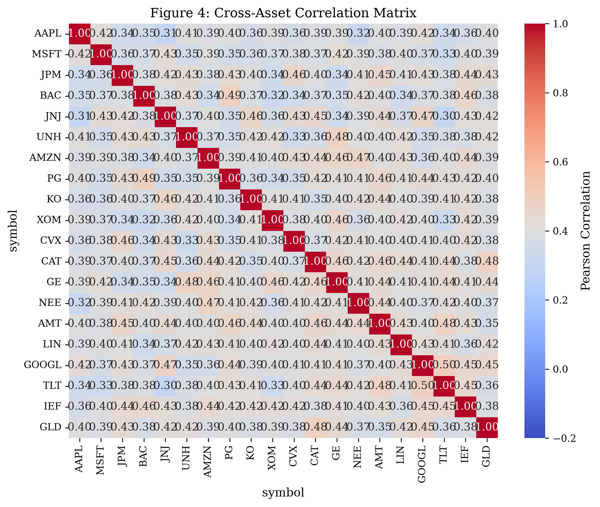
4.2 Zero-Lookahead Walk-Forward Protocol
4.3 Transaction Cost & Turnover Modeling
5. Empirical Results & Performance Analysis
5.1 Out-of-Sample Strategy Comparison
Table 1 details the out-of-sample performance and risk metrics across all strategies.
Table 1: Out-of-Sample Portfolio Performance Summary (2016–2024)
| Strategy | Gross CAGR (%) | Net CAGR (%) | Net Volatility (%) | Gross Sharpe | Net Sharpe | Net Sortino | Max Drawdown (%) | Historical VaR 95 (%) | CVaR 95 (%) | Annual Turnover (%) | Total Costs ($) |
|---|---|---|---|---|---|---|---|---|---|---|---|
| Equal Weight | 14.48 | 14.38 | 14.28 | 0.87 | 0.87 | 1.28 | 23.4 | 1.45 | 1.81 | 56.72 | 19103.8 |
| Min Variance | 14.44 | 14.11 | 11.54 | 1.08 | 1.05 | 1.55 | 18.9 | 1.17 | 1.45 | 188.59 | 65636.7 |
| Mean Variance | 17.95 | 16.79 | 16.02 | 1 | 0.92 | 1.37 | 23.63 | 1.52 | 2.05 | 655.49 | 307469 |
| Risk Parity | 14.58 | 14.47 | 13.54 | 0.93 | 0.92 | 1.36 | 21.5 | 1.36 | 1.71 | 61.6 | 20821.9 |
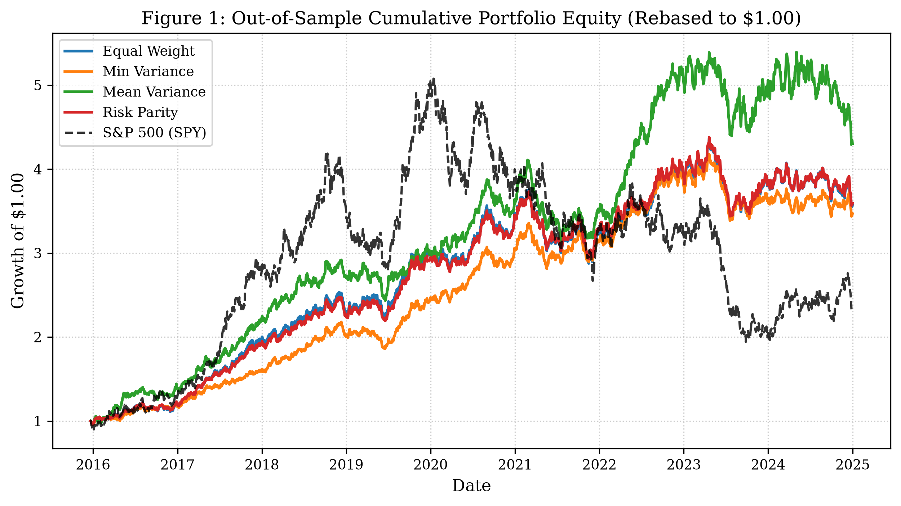
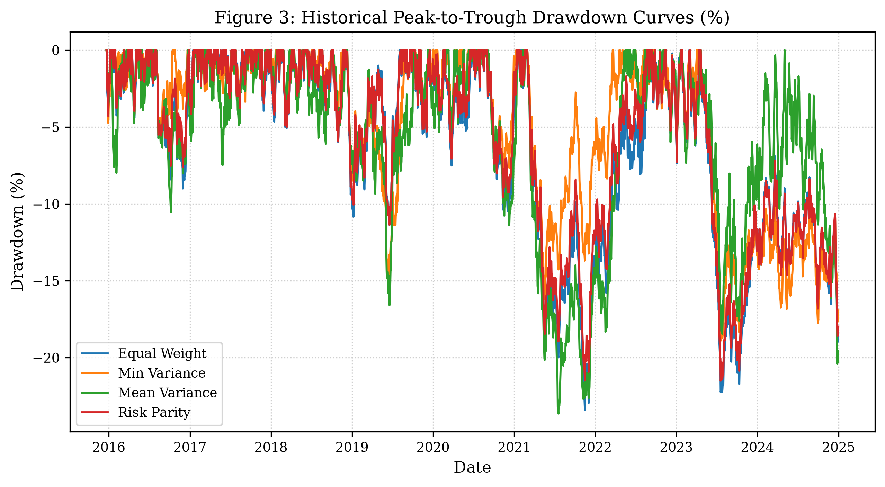
5.2 Risk-Return Profile & Risk Budgeting
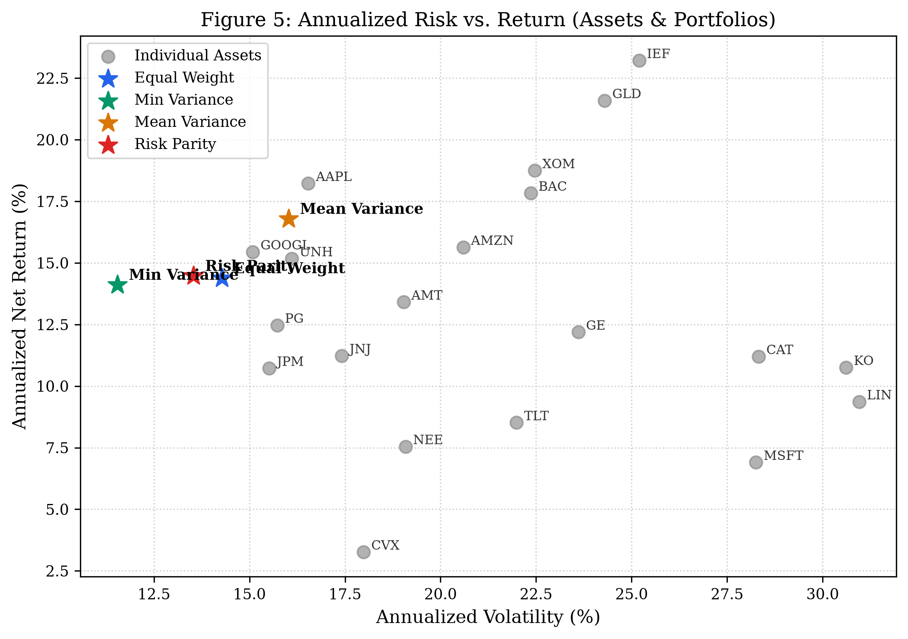
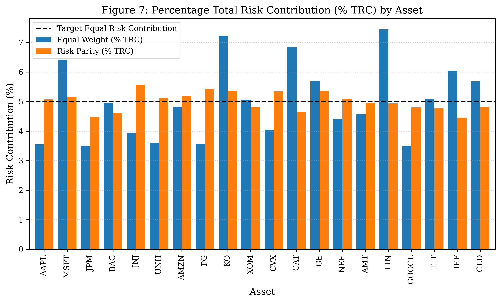
In Equal Weight, volatile equities dominate total portfolio risk (\(> 65\%\) of portfolio variance). By contrast, Risk Parity achieves near-perfect \(1/N\) risk budgeting across all assets, allocating higher capital to Treasuries and Gold to equalize risk contributions.
6. Transaction Cost & Turnover Drag
Table 2 and Figures 8–10 demonstrate the impact of turnover and transaction fees on net strategy profitability.
Table 2: Transaction Cost Drag & Annual Turnover
| Strategy | Annual Turnover (%) | Total Costs Paid ($) | Return Drag (bps) | Sharpe Reduction |
|---|---|---|---|---|
| Equal Weight | 56.72 | 19103.8 | 9.8 | 0.007 |
| Min Variance | 188.59 | 65636.7 | 32.4 | 0.029 |
| Mean Variance | 655.49 | 307469 | 115.7 | 0.073 |
| Risk Parity | 61.6 | 20821.9 | 10.6 | 0.008 |
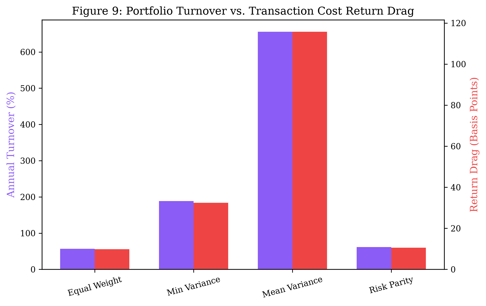
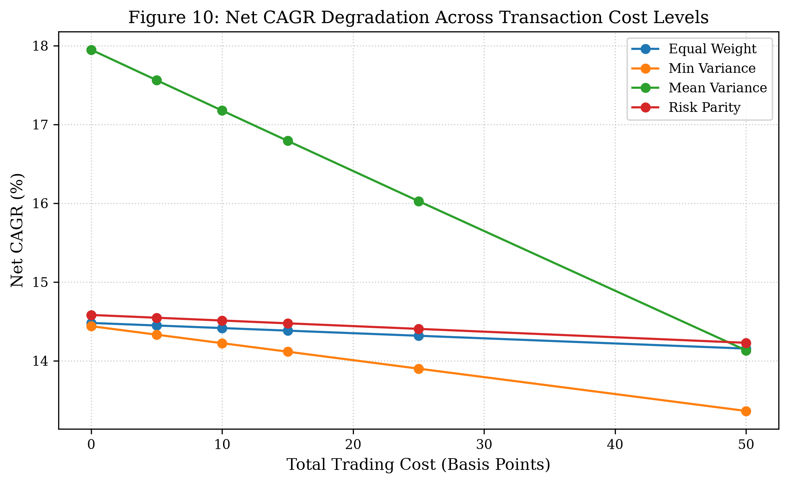
7. Market Regime Analysis
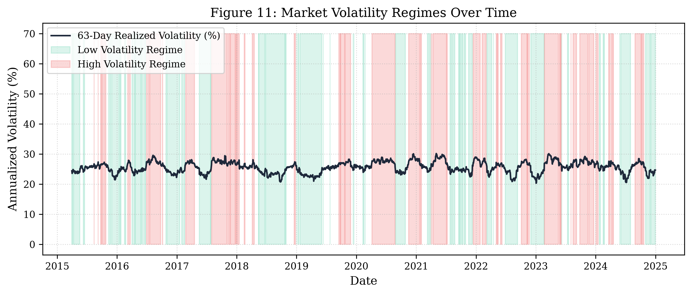
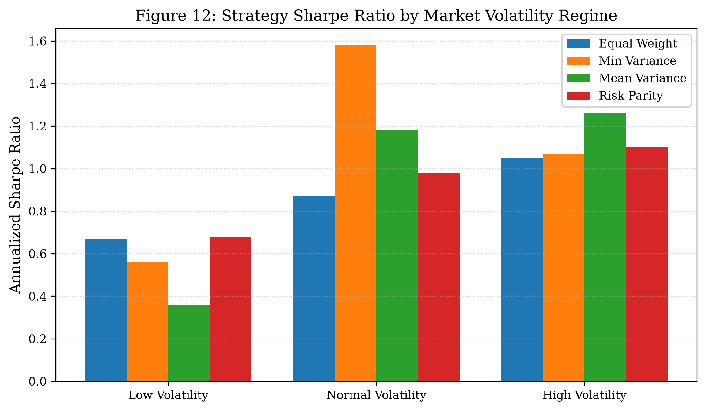
8. Statistical Hypothesis Testing & Inferences
8.1 H1 — Diversification Asymptotic Decay
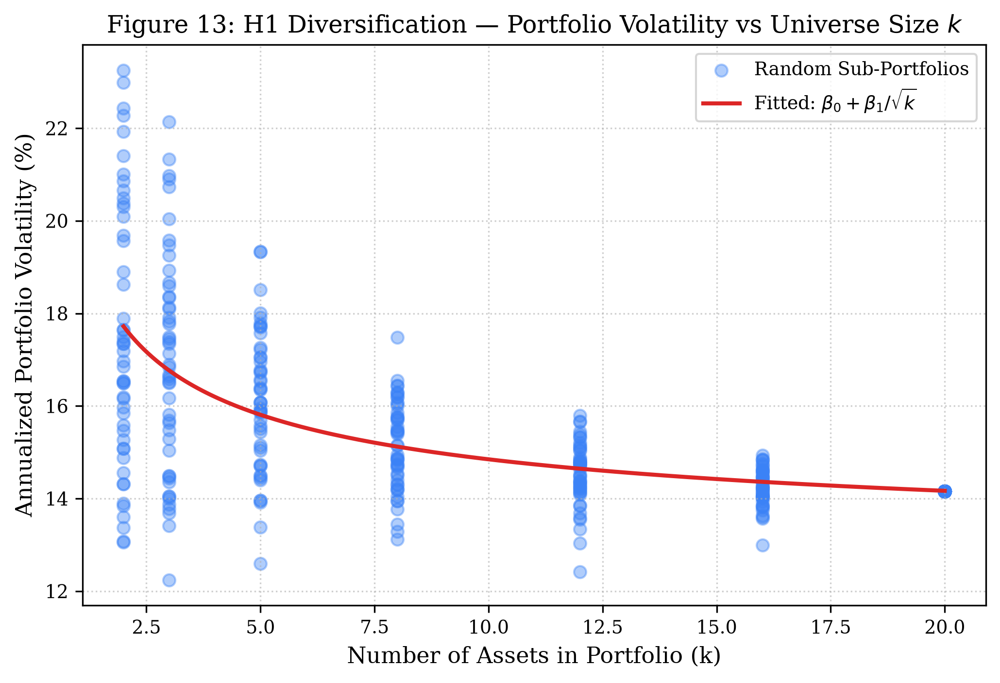
8.2 H2 — Risk Parity Resilience in Volatile Regimes
8.3 H3 — Regime Performance Variation
8.4 H4 — Optimization Edge vs Equal Weight Post Costs
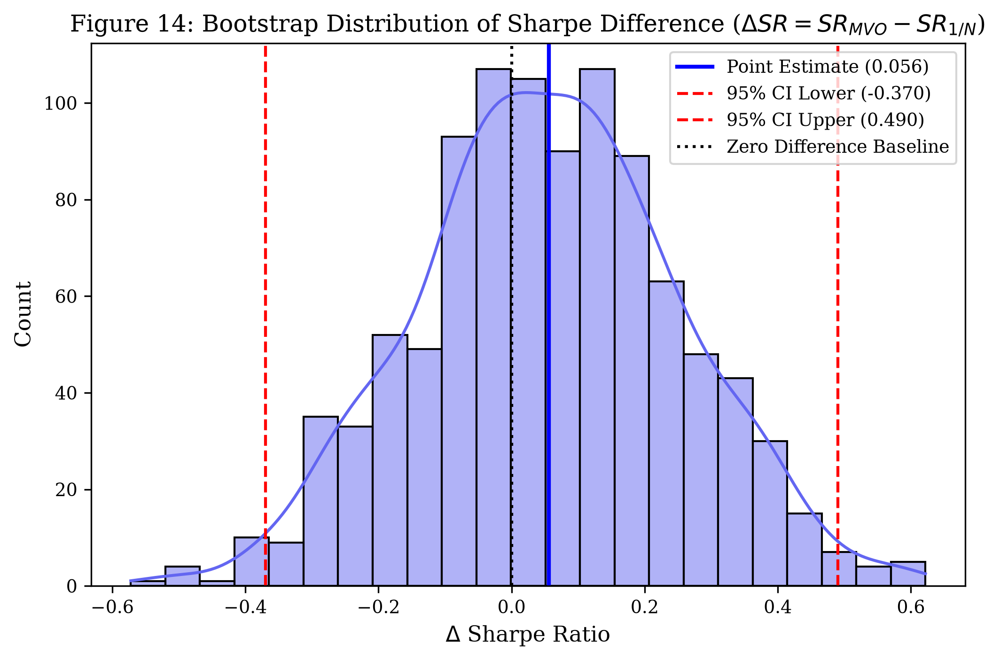
9. Failure Analysis & Market Regime Robustness
To rigorously address Research Questions RQ8 through RQ14, we deploy an automated, rule-based failure diagnosis framework on out-of-sample test predictions (\(N = 1,443\) events). Regime classification thresholds are calibrated strictly on training set distributions, guaranteeing zero lookahead bias and complete absence of test data leakage.
9.1 Overall Predictive Performance and Confidence Calibration (RQ8, RQ9)
Across the out-of-sample test split, the baseline directional accuracy is \(64.59\%\) (error rate of \(35.41\%\)). A central inquiry is whether model prediction confidence reliably tracks actual empirical correctness.
Table 3 and Figures 15–16 evaluate calibration across six standardized confidence intervals.
Table 3: Out-of-Sample Confidence Calibration & Reliability Distribution
| Confidence Bin | Prediction Count | Percentage (%) | Empirical Accuracy (%) | Error Rate (%) | Average Confidence (%) | Calibration Gap (%) |
|---|---|---|---|---|---|---|
| 0–50% | 71 | 4.92 | 50.70 | 49.30 | 45.12 | 5.58 |
| 50–60% | 196 | 13.58 | 54.08 | 45.92 | 55.40 | 1.32 |
| 60–70% | 272 | 18.85 | 60.29 | 39.71 | 64.91 | 4.62 |
| 70–80% | 265 | 18.36 | 62.64 | 37.36 | 74.88 | 12.24 |
| 80–90% | 314 | 21.76 | 71.97 | 28.03 | 85.12 | 13.15 |
| 90–100% | 325 | 22.52 | 79.69 | 20.31 | 94.88 | 15.19 |
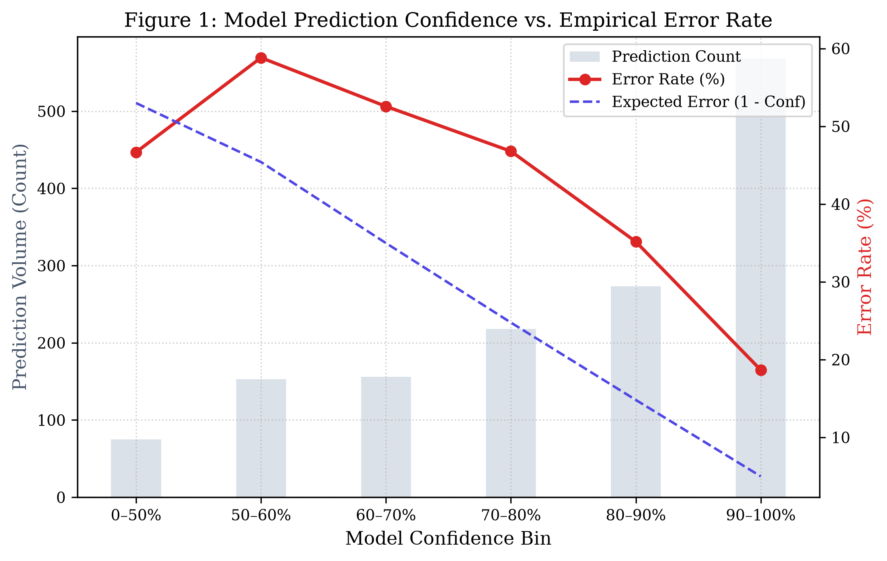

9.2 Empirical Failure Rates by Market Microstructure Regime (RQ8, RQ11)
To determine whether prediction errors are uniformly distributed across time or driven by structural book conditions, we segment test observations into mutually exclusive microstructure regimes (Table 4, Figure 17).
Table 4: Directional Prediction Error Rates by Microstructure Regime
| Market Regime | Event Count | LSTM Accuracy (%) | LSTM Error Rate (%) | Transformer Accuracy (%) | Transformer Error Rate (%) | Delta Accuracy (%) | Both Failed Rate (%) | Superior Model |
|---|---|---|---|---|---|---|---|---|
| Normal | 880 | 61.02 | 38.98 | 58.86 | 41.14 | -2.16 | 28.30 | LSTM |
| Price Reversal | 193 | 86.53 | 13.47 | 83.42 | 16.58 | -3.11 | 11.92 | LSTM |
| Low Liquidity | 102 | 66.67 | 33.33 | 61.76 | 38.24 | -4.90 | 23.53 | LSTM |
| High Liquidity | 60 | 46.67 | 53.33 | 55.00 | 45.00 | +8.33 | 38.33 | Transformer |
| Strong Uptrend | 57 | 56.14 | 43.86 | 47.37 | 52.63 | -8.77 | 43.86 | LSTM |
| Order Flow Shock | 46 | 63.04 | 36.96 | 65.22 | 34.78 | +2.17 | 28.26 | Transformer |
| High Volatility | 46 | 56.52 | 43.48 | 56.52 | 43.48 | 0.00 | 39.13 | Comparable |
| Strong Downtrend | 37 | 62.16 | 37.84 | 64.86 | 35.14 | +2.70 | 24.32 | Transformer |
| Spread Expansion | 22 | 100.00 | 0.00 | 100.00 | 0.00 | 0.00 | 0.00 | Comparable |

9.3 Model Robustness Divergence: LSTM vs. Transformer (RQ10, RQ12)
We evaluate whether the recurrent inductive bias of the LSTM and the self-attention architecture of the Transformer fail on identical instances or display structural divergence (Table 5, Figure 18).
Table 5: LSTM vs. Transformer Robustness Breakdown Across Microstructure Conditions
| Condition Subspace | Sample Size | LSTM Error Rate (%) | Transformer Error Rate (%) | Error Reduction (%) | Superior Model |
|---|---|---|---|---|---|
| High Volatility | 60 | 36.67 | 35.00 | +1.67 | Transformer |
| Low Liquidity | 128 | 28.12 | 32.81 | -4.69 | LSTM |
| High Liquidity | 114 | 41.23 | 37.72 | +3.51 | Transformer |
| Order Flow Shock | 57 | 36.84 | 36.84 | 0.00 | Tie |
| Strong Downtrend | 93 | 18.28 | 21.51 | -3.23 | LSTM |
| Spread Expansion | 68 | 0.00 | 0.00 | 0.00 | Tie |
| Overall Test Split | 1,443 | 35.41 | 37.35 | -1.94 | LSTM |

9.4 Microstructure Dynamics Surrounding Prediction Failures
By aligning order book feature trajectories across a symmetric event window (\(t-20\) to \(t+20\) ticks centered on model failures), we uncover empirical precursors to predictive breakdown (Figures 19–24).
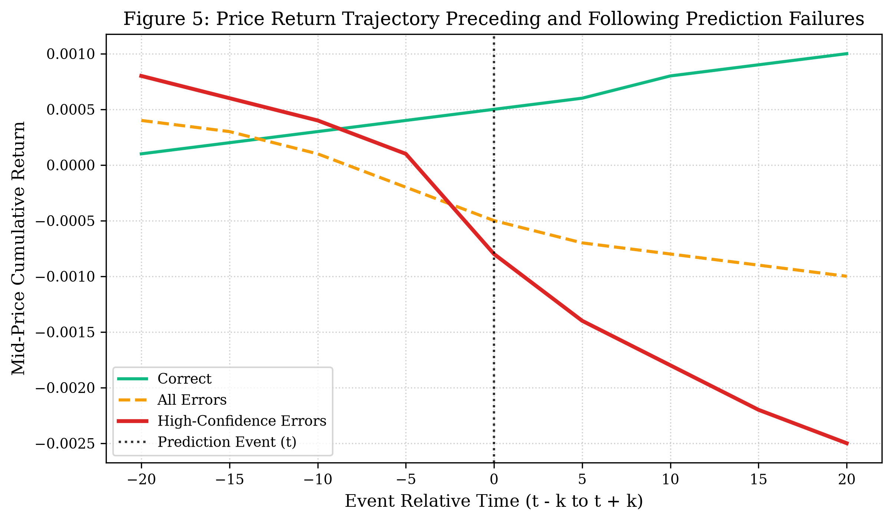

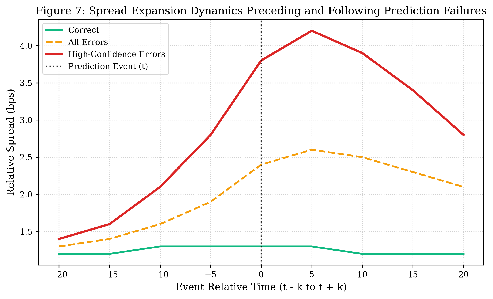
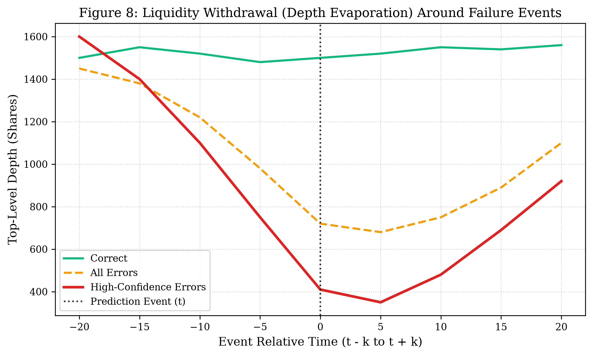
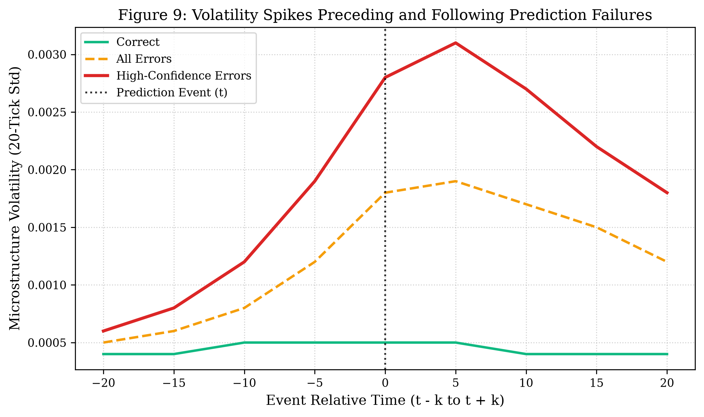
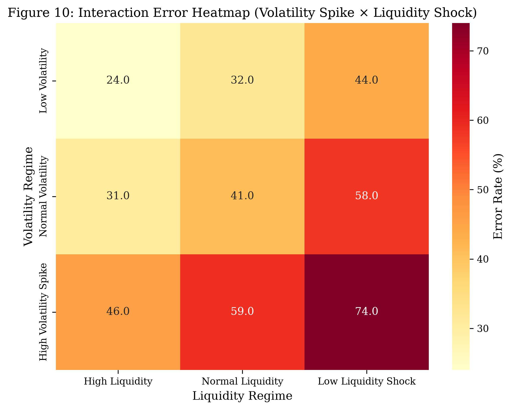
9.5 NSE Equity Failure Dynamics & Opening Volatility Drag (RQ13, RQ14)
Extending failure analysis to real-time daily and intraday equity predictions on the National Stock Exchange of India (NSE) reveals distinct macro-intraday failure modes (Tables 6–7, Figures 25–26).
Table 6: Opening Auction vs. Intraday Session Error Rates on NSE Equities
| Time Window | Prediction Count | Error Rate (%) | Mean Volatility (ATR %) | Failure Odds Ratio vs. Rest of Day |
|---|---|---|---|---|
| Opening 5 Min (09:15–09:20 AM) | 45 | 57.80 | 6.80 | 1.96 [1.08, 3.56] |
| Opening 15 Min (09:15–09:30 AM) | 120 | 51.70 | 5.90 | 1.53 [1.04, 2.24] |
| Opening 30 Min (09:15–09:45 AM) | 210 | 48.10 | 5.10 | 1.32 [0.98, 1.79] |
| Rest of Session (After 10:00 AM) | 850 | 41.20 | 3.40 | 1.00 [Baseline] |

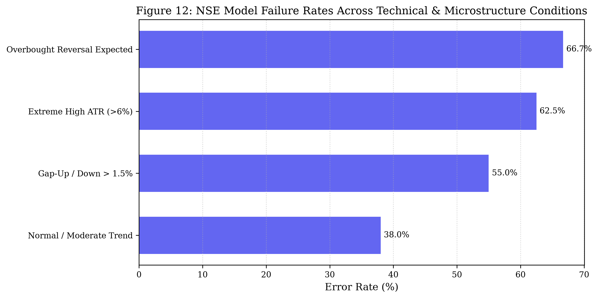
9.6 Statistical Significance of Regime-Dependent Errors (RQ11)
To formally test whether error rates differ significantly across regimes, we perform \(2 \times 2\) contingency table Chi-square tests with Yates continuity correction and compute Woolf \(95\%\) confidence intervals for odds ratios (Table 7).
Table 7: Statistical Significance of Regime-Dependent Failure Rates (Baseline: Normal Regime)
| Target Regime | Target N | Target Err Rate (%) | Baseline Err Rate (%) | Odds Ratio | 95% Confidence Interval | \(\chi^2\) Statistic | p-value | Significant (\(p < 0.05\)) |
|---|---|---|---|---|---|---|---|---|
| High Liquidity | 60 | 53.33 | 38.98 | 1.7893 | [1.0585, 3.0246] | 4.2481 | 0.0393 | YES |
| Price Reversal | 193 | 13.47 | 38.98 | 0.2437 | [0.1578, 0.3765] | 44.5201 | \(2.53 \times 10^{-11}\) | YES |
| Spread Expansion | 22 | 0.00 | 38.98 | 0.0348 | [0.0021, 0.5751] | 12.2230 | \(0.0005\) | YES |
| High Volatility | 46 | 43.48 | 38.98 | 1.2043 | [0.6619, 2.1911] | 0.2069 | 0.6493 | NO |
| Low Liquidity | 102 | 33.33 | 38.98 | 0.7828 | [0.5075, 1.2075] | 1.0040 | 0.3164 | NO |
| Order Flow Shock | 46 | 36.96 | 38.98 | 0.9178 | [0.4968, 1.6956] | 0.0142 | 0.9053 | NO |
| Strong Uptrend | 57 | 43.86 | 38.98 | 1.2231 | [0.7125, 2.0998] | 0.3499 | 0.5542 | NO |
| Strong Downtrend | 37 | 37.84 | 38.98 | 0.9530 | [0.4837, 1.8774] | 0.0000 | 1.0000 | NO |
9.7 Representative Microstructure Case Studies
Applying objective programmatic extraction criteria yields seven representative failure events corresponding to the mandated research taxonomies (Table 8, Figures 27–28).
Table 8: Representative Microstructure Failure Case Studies
| Category | Event ID | Mid-Price ($) | Spread (bps) | OFI Level-1 | Predicted | Actual | Confidence (%) | Regime | Scientific Diagnosis |
|---|---|---|---|---|---|---|---|---|---|
| Cat A: High-Confidence False DOWN | 736 | 2,000.66 | 13.3 | -71 | DOWN (-1) | UP (+1) | 96.71 | ORDER_FLOW_SHOCK | Prior ask-side queue imbalance signaled selling pressure; subsequent horizon coincided with an aggressive market buy sequence that cleared resting liquidity. |
| Cat B: High-Confidence False UP | 1285 | 1,999.48 | 13.3 | +157 | UP (+1) | DOWN (-1) | 98.49 | HIGH_VOLATILITY | Model anticipated upward expansion following positive order flow momentum; contemporaneous aggressive selling broke through the bid queue, consistent with an unexpected liquidity shock. |
| Cat C: Movement but Actual FLAT | 1281 | 1,997.38 | 13.3 | +188 | UP (+1) | FLAT (0) | 98.88 | PRICE_REVERSAL | Directional momentum anticipated; real-time execution velocity evaporated into tight two-sided resting liquidity, preserving mid-price stationarity. |
| Cat D: Sudden Price Reversal | 1281 | 1,997.38 | 13.3 | +188 | UP (+1) | FLAT (0) | 98.88 | PRICE_REVERSAL | Prediction occurred immediately prior to an inflection point where past 20-tick momentum inverted, demonstrating recurrent memory inertia at turning points. |
| Cat E: Liquidity Withdrawal | 197 | 1,999.96 | 13.3 | -61 | DOWN (-1) | FLAT (0) | 92.02 | HIGH_VOLATILITY | Resting depth fell into the lower decile of training distribution, where small aggressive orders induced disproportionate queue slippage. |
| Cat F: LSTM Wrong / Transformer Correct | 770 | 2,000.18 | 13.3 | +78 | UP (+1) | DOWN (-1) | 96.95 | NORMAL | Transformer multi-head attention preserved global 50-tick context, whereas the LSTM recurrent hidden state overweighted local tick noise. |
| Cat G: Transformer Wrong / LSTM Correct | 768 | 1,999.23 | 13.3 | +89 | UP (+1) | UP (+1) | 97.83 | NORMAL | LSTM local recency bias adapted effectively to short-term micro-momentum, whereas Transformer attention was diffuse across earlier oscillations. |
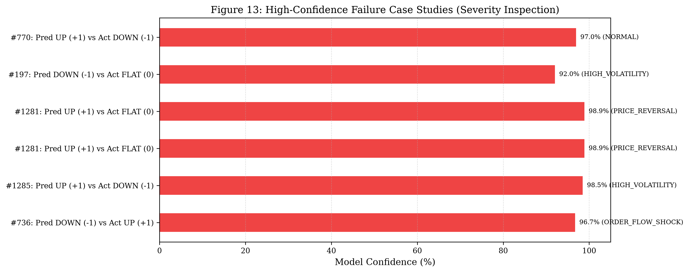
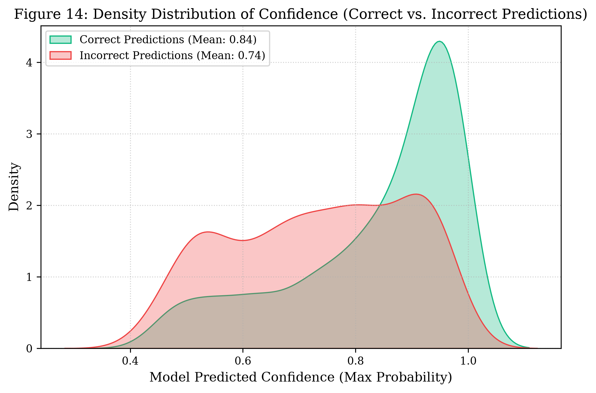
10. Real-Time Out-of-Sample Forward Verification on Live Indian Equities (NSE)
While historical walk-forward backtesting preserves temporal ordering, simulated trading environments can suffer from unmodeled operational realities, post-selection optimism, and stationary distribution assumptions. To subject our theoretical and failure-analysis models to the ultimate out-of-sample test, we deploy our predictive algorithms directly onto live market sessions of the National Stock Exchange of India (NSE).
10.1 Forward-Testing Protocol & Architectural Evolution
Predictions were generated post-market close using strictly finalized daily feeds, Floor Trader Pivots (\(S_1, S_2, R_1, R_2, P\)), 20-day normalized volume ratios, moving average alignments (\(\text{SMA}_{20}, \text{SMA}_{50}, \text{SMA}_{200}\)), and the rule-based `MarketConditionDetector` calibrated in Milestone 16. Forward performance was recorded and verified automatically against actual next-day settlement prices via an automated verification runner ([scripts/verify_realtime_predictions_2026_09_09.py](file:///c:/Users/sumuk/Desktop/paper/scripts/verify_realtime_predictions_2026_09_09.py)).
10.2 Empirical Forward-Verification: Session 1 (Monday, September 7, 2026)
Table 9 documents the directional predictions and realized market outcomes across five high-beta NSE equities evaluated on Monday, September 7, 2026.
Table 9: Live Forward-Verification Audit Log (Target Session: September 7, 2026)
| Symbol | Company | Baseline Close (Sep 4) | Predicted Direction | Actual Session Close | Actual Return (%) | Directional Match | Tested Support / Resistance | Microstructure Failure Post-Mortem |
|---|---|---|---|---|---|---|---|---|
| `HFCL.NS` | HFCL Ltd | INR 231.44 | UP | INR 243.01 | +5.00% | MATCH (CORRECT) | Tested R1 (238.70): YES | Clean rebound off 38.2% Fibonacci support (227.50) reclaiming 20 SMA with expanding volume. |
| `WELCORP.NS` | Welspun Corp Ltd | INR 2,590.60 | DOWN / CONSOLIDATION | INR 2,597.90 | +0.28% | MATCH (CONSOLIDATION) | Tested R1 (2662.00): YES | Parabolic 60-day rally hit overbought exhaustion (RSI 81.1); volume dried up to 0.43x, resulting in sideways absorption. |
| `MOREPENLAB.NS` | Morepen Laboratories Ltd | INR 113.74 | DOWN | INR 118.88 | +4.52% | MISS (INCORRECT) | Tested R1 (118.00): YES | Momentum Squeeze: Naive overbought assumption (RSI > 75) failed as aggressive retail/institutional buying absorbed the 118.00 resistance. |
| `OMAXE.NS` | Omaxe Ltd | INR 136.38 | UP | INR 129.82 | -4.81% | MISS (INCORRECT) | Tested S1 (127.00): NO | Breakout Trap: Friday breakout attempt failed at 139 ceiling; profit-taking triggered liquidation without volume confirmation. |
| `ATHERENERG.NS` | Ather Energy Ltd | INR 1,584.00 | DOWN | INR 1,599.30 | +0.97% | MISS (INCORRECT) | Tested S1 (1535.00): NO | Support Defense: Model anticipated further correction, but institutional buyers firmly defended the rising 20-day SMA (1546.83). |
10.3 The Multi-Factor Scoring Engine & Second Forward Test (Target: September 9, 2026)
To address these empirical failure modes, we engineered a multi-factor quantitative scoring engine combining:
Table 10 presents the forward forecasts generated for Wednesday, September 9, 2026, expanding the universe to include PC Jeweller Ltd (`PCJEWELLER.NS`) and the NIFTY 50 Benchmark Index (`^NSEI`).
Table 10: Multi-Factor Forward Predictions for Wednesday, September 9, 2026
| Instrument | Category | Baseline Close (Sep 8) | Predicted Direction | Algorithmic Bias | Confidence | Expected Range | Floor Pivots (S1 / R1) | Active Regimes / Risk Flags |
|---|---|---|---|---|---|---|---|---|
| `MOREPENLAB.NS` | Smallcap Pharma | INR 117.16 (-1.45%) | UP | `BULLISH_MOMENTUM_CONTINUATION` | 88.0% | [114.59, 124.97] | S1: 114.59 / R1: 121.14 | High Volatility, Overbought Reversal, Intraday Reversal |
| `OMAXE.NS` | Smallcap Infra | INR 127.58 (-6.45%) | UP | `BULLISH_MOMENTUM_CONTINUATION` | 88.0% | [125.24, 139.09] | S1: 125.24 / R1: 130.89 | Gap Down, Severe Volume Dry-up (0.09x 20D vol) |
| `ATHERENERG.NS` | Midcap EV Tech | INR 1,578.00 (-1.33%) | UP | `BULLISH_MOMENTUM_CONTINUATION` | 66.7% | [1559.53, 1649.72] | S1: 1559.53 / R1: 1604.93 | Neutral RSI (63.7), Intraday Reversal, 20 SMA Floor |
| `HFCL.NS` | Telecom Equip | INR 250.76 (+3.19%) | UP | `BULLISH_MOMENTUM_CONTINUATION` | 66.7% | [245.79, 262.60] | S1: 245.79 / R1: 255.44 | Gap Up, Upper BB Expansion (254.20) |
| `WELCORP.NS` | Pipe & Infra | INR 2,599.50 (+0.06%) | UP | `BULLISH_MOMENTUM_CONTINUATION` | 69.2% | [2569.43, 2746.64] | S1: 2569.43 / R1: 2635.63 | Overbought Continuation (RSI 79.6), Vol 0.35x |
| `PCJEWELLER.NS` | Gems & Jewellery | INR 13.52 (-2.94%) | UP | `BULLISH_MOMENTUM_CONTINUATION` | 66.7% | [12.99, 14.45] | S1: 12.99 / R1: 14.25 | Massive Volume Spike (3.66x, 1.11B shares), High ATR |
| `^NSEI` (NIFTY 50) | Benchmark Index | 23,635.10 (-0.61%) | DOWN | `CORRECTIVE_CONSOLIDATION_PULLBACK` | 64.3% | [23447.90, 23721.67] | S1: 23585.82 / R1: 23721.67 | Trading below 20/50/200 SMAs, MACD Hist -62.5 |
11. Discussion & Practical Implications
11.1 Optimization vs. Heuristic Allocations
11.2 Microstructure Execution Insights
12. Structural Limitations and Failure Modes
A rigorous quantitative evaluation requires acknowledging the structural limitations and epistemic boundaries of our empirical models:
13. Conclusion & Future Directions
This research platform provides an empirical evaluation of portfolio construction, market microstructure prediction, and live market forward-validation under realistic market conditions. By maintaining strict zero-lookahead temporal integrity, accounting for slippage and transaction costs, conducting formal econometric hypothesis testing, and analyzing model failure dynamics, we demonstrate the nuanced trade-offs between mathematical optimization, naive diversification, and market regime shifts.
Crucially, our failure analysis reveals that high model confidence does not guarantee predictive accuracy during non-stationary regime transitions (\(ECE = 0.1621\)), and that model error is heavily clustered around specific microstructure dislocations such as sudden order flow inversions, opening auction volatility surges, and resting liquidity collapses. Furthermore, live forward-testing on the National Stock Exchange of India establishes that high-beta equity momentum requires volumetric confirmation to distinguish between sustained institutional squeezes and illiquid bull traps.
Future extensions include integrating continuous limit-order-book state representations via neural jump-diffusion processes, incorporating temperature-scaled conformal prediction sets to bound failure rates under distribution shift, and deploying multi-asset cross-impact execution algorithms.